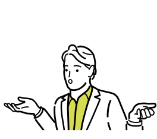
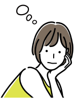
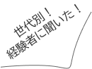

旅の魅力とは
旅とは
「旅」は目的地に至るまでの過程を
重視しているところです。目的地に
至るまでの道のり、そこで出会った
人々、見たことのない景色などすべ
てがこの「旅」の過程となります。
「旅」を通して成長するという点で
区別する方もいるようです。

旅で得られるもの
一人旅を経験することで「一人で判断・
決断」「チャレンジ精神」「多様な価値
観の受け入れ」など様々なスキルを身に
着けることができるようになります。
このスキルを成長させることでより充実
した生活を送れるようになります。

一人旅の感想

20代の感想
kさん
最初はすごく不安で挑戦するのにだいぶ
勇気が必要だったけど体験してみたら不
安を感じさせないくらい充実することが
でき、とても楽しかった。
Mさん
最初はすごく不安で挑戦するのにだいぶ
勇気が必要だったけど体験してみたら不
安を感じさせないくらい充実することが
でき、とても楽しかった。
30代の感想
Fさん
元々一人旅に興味があってちょうど
何か人生に変化が欲しいと思い旅に
挑戦しました。今思えば旅というよ
り旅行に近い一人旅が多かったです
がでしたが十分成長を感じることが
できました。
Sさん
元々一人旅に興味があってちょうど
何か人生に変化が欲しいと思い旅に
挑戦しました。今思えば旅というよ
り旅行に近い一人旅が多かったです
がでしたが十分成長を感じることが
できました。

ソロトリの
概念とは
豊かな一人旅を
旅を通して色々な体験や
出会い、価値観など自分
が持っていなかった新し
い選択肢を広げていき楽
しんでもらいたい。
1
旅は永遠もの
旅とは得た経験や知識を
そのあとの人生に生かす
ことができる。自分の可
能性に最大限向き合って
ほしい。
2
ソロトリの由来
ソロトリとは非日常空間で過ごす
自分のための時間であり「必ず一
人で」や「旅だから遠出」という考
え方ではありません。旅とは自由
なんです。先入観に縛られず自由
に楽しみましょう。
3
旅への挑戦
コンテンツ内容説明
STEP1で今のあなたが成長
あるいは欲しいスキルを選
択してあなたの成長に繋が
るプランで旅に挑戦してみ
よう（場所も一部選択可）
旅は旅行とは違い遊びではありません
では旅とは何なのか、それも含めて旅
を通して探してきてもらいたい
0
STEP
それでも不安なあなたへ
分からない
そんなあなたに

EX
特別クーポン・情報を発信中！